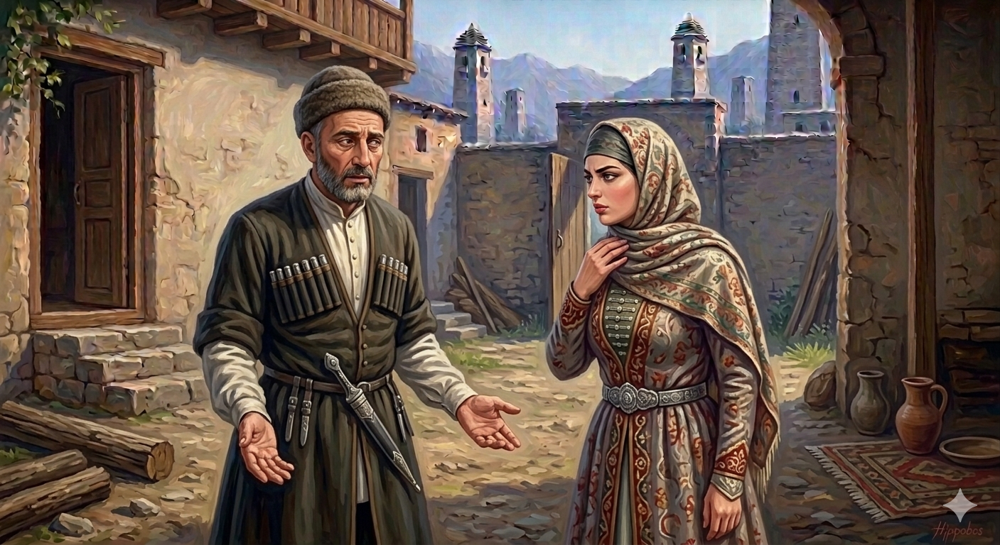

И.А. Дахкильгов. Хьехаме дувцарш - поучительные рассказы-притчи.
И.А. Дахкильгов. Хьехаме дувцарш - поучительные рассказы-притчи. Из ингушского фольклора.

Хьо-м бӀагӀар а ма хиннавий
Цхьа къонах хиннав "хӀама тӀайоагӀача" балха волаш. ХӀарача ден, чу массаза ва, цхьацца хӀама яхьаш хиннав из. Иштта лелаш, тоъал ха яьлча, цкъа ши кулг даьсса Ӏохийца цӀагӀа чувенав из. Цун кулгашка а хьежа, тӀаккха цун юхьага а хьежа, цхьан юкъа цецяьннача латтийсай сесаг. Мара аьнад: - Даьсара, сесаг, "совгӀаташ" яха уж хӀамаш кхы хург ма яц вай, балхара дӀаваьккхав со. - Ай, ва къонах, - аьннад сесаго, - аз хӀанзолца зе а мича зийнадар, хьо-м, къонах, бӀагӀар а ма хиннавай!
РУССКИЙ
Оказывается, ты косоглазый
Некий мужчина поворовывал на работе. Каждый раз, приходя домой, он что-нибудь да приносил. Все шло хорошо в их семье, но однажды он вернулся с пустыми руками. Удивленно глянула жена на его руки, а потом и в его глаза. Муж сказал: - Все, больше "гостинцев" не будет. Меня уволили с работы. Пристально посмотрела жена ему в глаза и сказала: - Я до сего дня как-то и не замечала: а ты, муженек, оказывается, косоглазый.
ENGLISH
It turns out that you are cross-eyed
There was a man who used to steal from work. Every time he came home, he'd bring something back with him. Everything was going well for the family, but one day he came home empty-handed. His wife looked at his hands in surprise and then into his eyes. Her husband said, 'That's it, no more "gifts". I've been sacked from my job.' Looking intently into his eyes, his wife said, 'I hadn't really noticed until today, but it turns out that you're cross-eyed.'
НОХЧИЙН
Хьо-м бӀагӀара а ма хиллий
Цхьа къонах хилла "хӀума тӀейогӀучохь" балхахь волуш. ХӀор денна, чу мосазза вогӀу, цхьацца хӀума йохьуш хилла иза. Иштта лелаш, тоъал хан йаьлча, цкъа ши куьг даьсса охьахийцина цӀех чувеан иза. Цуьнан куьйгашка а хьаьжна, тӀаккха цуьнан йуьхье а хьаьжна, цхьана йукъа цецйаьллачохь лаьтташ йисна зуда. Майро аьлла: - Десара, зуда, "совгӀаташ" дохьуш уьш хӀуманаш кхин хир ма дац вай, балхара дӀаваьккхина со. - Ай, ва къонах, - аьлла зудчо, - ас хӀинццалц зен а мича зийнера, хьо-м, къонах, бӀагӀара а ма хиллий!
ПОГОВОРКИ